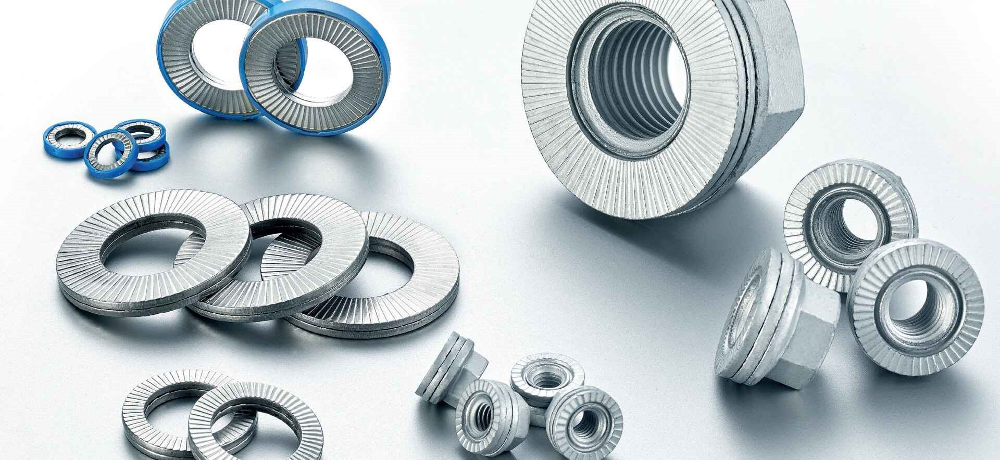
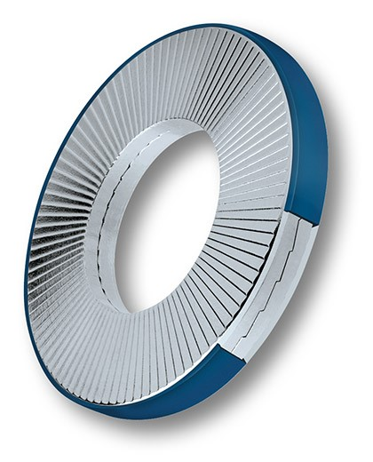

Providing Industrial Productivity Solutions for Assembly, Custom Lifting, Material Removal, and MRO
Engineered OEM Solutions
Designing a clean and simple product can provide serious challenges when bolted connections, pins and unique geometry parts are critical to success. AEHH strives to understand your goals by listening to your company’s needs. This knowledge is critical to helping find and present technologies that may benefit your products.
AEHH has sought out and partnered with the below manufacturers whose solutions continually revolutionize the design and function of our customers products. These products provide simple, efficient ways to make tasks safe, easy and improve longevity in many cases. Select from one of the below categories to expand your knowledge on the cutting-edge technologies AEHH can provide.
Nord-Lock Group’s Superbolt and Boltight Divisions have been at the forefront of zero-friction tensioning for decades. AEHH works with Nord-Lock Group’s experienced engineering team is here to help provide you guidance when designing a tensioner into your build. Nord-Lock Group is sure to have the correct tensioner for your application, by providing many standard sizes and materials as well as the ability to manufacture small, medium and large quantities of custom tensioners.
Types of Tensioners
Below are the different categories of tensioners that Nord-Lock Group offers.
Versatite Tensioners
Versatite tensioners take the best of hydraulic tensioning and mechanical tensioning and combines them into a revolutionary technology. This hybrid tensioner allows you to use hydraulics or mechanical methods to tension.
Mechanical Bolt and Nut Style Tensioners by Nord-Lock Group
Many challenges are faced when manufacturing products that requires the assembly of large diameter nuts and bolts. When using a turn torque solution, high preloads are not easily met or controlled because of the logistical and ergonomic challenges of fastening in these applications. Controlling preload is limited to 25% accuracy at best, when all torque procedures are being followed without any error.
Superbolt was the world’s first to revolutionize nuts and bolts with multi-jackbolt tensioning technology. Since then, our technology has been proven in tens of thousands of successful installations and we continue to develop a multitude of solutions to solve the next generation of bolting challenges. By using zero friction mechanical tensioning, bolts stretch under pure tension without any torque wind up, resulting in a safe, fast and accurate way to control preload in a tight tolerance around 10% accuracy.
Common Applications for Mechanical Tensioners
Below are some of the industries and applications where mechanical tensioners are used throughout industry both OEM and Aftermarket. In many instances, our OEM business results from solving a challenge for the end user in the field. The combination of installation labor savings, increased quality control and reduced risk of injury provides many opportunities for mechanical tensioners to provide cost savings in your operation.
Case Studies
Presses
Applications include: Press columns, tie rods, bearing blocks, high pressure piping, die cushions, cylinder ram bolting, anchor bolts, and more.
The world's largest bolt-style multi-jackbolt tensioner 28" diameter x 40' long (711,2 mm diameter and 12,2 m long). This was used on a large hydraulic forging press.
Eight Superbolt column nuts required only 12 man-hours for installation vs. 2-1/2 full days of heating for columns.
Split-Nut thrust collars are a custom designed product from Superbolt that are much easier to install and remove than other large threaded fasteners on large press columns.
Power Generation
Applications include: Turbine couplings, stay rods, manway doors, inlet flanges, boiler circ pump main flange, boiler feed pump head and barrel casing, turbine wheel to shaft bolting, pelton turbine nozzles, servo piston nuts, bearing housings, and more.
With Superbolt tensioners, joints in awkward positions in confined spaces can be tightened. This Francis wheel has regular maintenance requirements which became manageable with MJTs connecting the wheel to the shaft.
For this boiler feed pump the 5-inch (127 millimeter) studs were previously tightened with a very large wrench in conjunction with heating rods. This method required 1-2 shifts (sometimes three) with three workers for installation or removal. Occasionally a nut would seize and would require destructive removal. For this boiler feed pump, MJTs were installed using ½-inch impacts for initial tightening, and calibrated torque wrenches for the final torque step. Two workers were utilized for the installation which required about fifteen minutes to spin the tensioners into position, and one hour and twenty-one minutes to tighten. This was a significant time savings versus the previous method.
Why are customers using Superbolt?
Tremendous clamping force available
Low torque requirement - only hand tools needed
Safe method for installation personnel
Quick installation and removal
Tightens stud/bolts using pure tension
Tensioner flexibility adds elasticity to studs/bolts to create a better bolted joint
Fits in restricted areas
Provides even tension from stud to stud
Accurate within 10% of specified bolt tension
Contact us today to learn how Superbolt products can fit into your application or check out our Nord-Lock Group Page in the header.
Hydraulic Nut Tensioners by Nord-Lock Group
Hydraulic nuts enable large diameter bolts to be tensioned with ease to high and accurate preloads. A hydraulic pump activates the internal jacking system, so the effort required to tighten a very large diameter bolt is reduced to the effort needed to operate the pump.
As there is no nut rotation during tightening, the operation can be performed in a confined space and torsional stresses on thread damage are eliminated. Any number of hydraulic nuts can be connected together for simultaneous operation, ensuring all bolts in the joint can be evenly loaded to the same high and accurate preload.
Why are customers using Hydraulic Nuts?
Quick and easy to install
Even and accurate load as it is developed hydraulically
Low loss of initial load (shim)
No torque or tension stress
No flogging hammers or spanners
Self-aligning (shim)
Improved fatigue performance
100% simultaneous tension
Long life of internal jack - very compact and cost effective
Less stud protrusion required than for tensioners
How Hydraulic Nuts Work
Contact us today to learn how Boltight Hydraulic Nuts can fit into your application.
EzFit and Hyfit by Nord-Lock Group
EzFit mechanical expansion bolts and Hyfit hydraulic expansion bolts, both offer tremendous radial expansion and joint clamping power in one bolting system. They are specially designed for rotating couplings or alignment systems that require the bolts to transfer forces in shear.
This innovative product replaces large fitted or interference fit bolts, no modifications required. The key to this solution is the split expansion sleeve that mates with the customers' machined holes. The split sleeve requires less tolerance on mating parts than is traditionally required with interference fit, saving critical machining time.
Styles of Expansion Bolts?
A Type
Mechanical expansion bolt for threadless bore
Access and operation from one side
Dimension on request
B Type
Mechanical expansion bolt for blind holes
Access and operation from one side
∅ 28 – 165mm
C Type
Mechanial expansion bolt for through-holes
Access and operation from both sides
∅ 28 – 165mm
Expansion Bolt Applications
Flange coupling of the gear box on a wind turbine. An expansion bolt with integrated Superbolt technology is used to transmit the enormous torque. The solution is also compact and does not add a lot of weight, which was a requirement.
Superbolt expansion bolts are ideally suited for shaft couplings, as seen here on this Francis type pump/generator shaft coupling at a pumped storage facility.
How Expansion Bolts Work
Contact us today to learn how Expansion bolts can fit into your application.
EXPANDER Pivot Pin Technology by Nord-Lock Group
Lug wear is a common problem with all machinery. Repairs involve a costly, time-consuming process with significant downtime and must be repeated several times over a machine’s life.
With the Expander System, the repair can be carried out directly in the worn mountings without welding and line boring – a permanent solution to lug wear.
Prevent lug wear from the first installation
Experts in the design and manufacture of machinery deserve to partner with experts in pivot pins. Whatever your machine, industry or application, EXPANDER will create the perfect pivot pin for your assemblies. From structural strength calculations to the dimensioning and production of your complete pivot pin axle – their personalized service will accompany you throughout the pivot pin creation process.
Their manufacturing plant in Dewitt, IA United States guarantee a speedy delivery, wherever you are in the world. With your pivot pin project in safe hands, you can dedicate more time to other areas of the machine building process.
Expander System is used by many OEMs, including Caterpillar, Komatsu, Volvo and John Deere.
Case Study
Customer: BLACKWELL, PART OF HARGREAVES SERVICES PLC Solution: EXPANDER SYSTEM Business: EARTHWORKS CONTRACTORS Project: HOUSE OF WATER COAL MINE, SCOTLAND Challenge: REDUCING DOWNTIME DURING MAINTENANCE Application: TRUCK SUSPENSION LEG MOUNTINGS AND HOIST MOUNTINGS Time saves: DOWNTIME REDUCED FROM DAYS TO A FEW HOURS
After many hours of operation in the abrasive conditions of a gran¬ite quarry, the truck had suffered significant wear in its suspension lug mountings and hoist mount¬ings, and required maintenance work. Because of the design of the Caterpillar 777G, line boring would have required removal and storage of the rear wheels. As each wheel weighs 4 tonnes, it is a manually intensive and risky job.
Furthermore, line boring is a costly, disruptive and time-consuming process that had been an integral part of Blackwell’s business for decades due to the use of regular straight pins. At a modern mine, every minute of lost production costs money, so to keep production going, replace¬ment machines were brought in, which increases complications and expenses. When Expander System approached the compa¬ny with an alternative, they were happy to try it.
During the installation of the new pins, the heavy rear wheels of Blackwell’s 777G could stay in place, which alone saved several hours.
“With the Expander System, downtime was reduced from days to just a few hours,” says Blackwell Plant Manager, David Lancashire. “While it’s too early to judge the long-term savings, the system has already given us impressive savings in both time and money.”
The Expander System also increases the lifecycle of the joint up to 50,000 hours. After a positive start with the system, Blackwell recently used it on a wheeled loader and are look¬ing to increase its use as a repair option on their extensive fleet.
Why are customers using Expander Systems?
Increase your customer satisfaction with a permenant solution to lug wear
Offer your customers the market's best lifetime and total cost solution
Access technical support and an engineering team that understands your pivot issues
Safety stock handling
Access all pivot pin designs, place orders and follow production stages in the Expander web shop
Order Tracking
How EXPANDER Pivot Pin Technology Works
Installation guide:
The Expander System is installed directly into the existing mounting
Upon tightening the fasteners, the washer presses the slotted expansion sleeve up the tapered ends of the pin
The sleeves expand, conform with the wear pattern and lock the system in the lug ears
Once retorqued, the system will lock from both sides
Contact us today to learn how EXPANDER Pivot Pin Technology can eliminate lug wear into your application.
Wedge-Locking Technology by Nord-Lock Group
Extreme vibration and dynamic loads often cause bolting challenges for manufactures. Nord-Lock wedge-locking technology secures bolted joints with tension instead of friction. The system is composed of a pair of reusable lock washers with cams on one side and radial teeth on the other. Nord-Lock wedge-locking products secure the fastener in a joint which cannot be loosened even when subjected to extreme vibration or dynamic loads. The Nord-Lock range includes steel construction washers, wheel nuts, combi bolt washers and custom solutions.
Why are customers using Wedge-Locking Technology?
Quick and easy to install and remove with hand tools
Locking function not affected by lubrication
High corrosion resistance
Reliable locking, even for joints with short clamp length
Reusable (depending on usage environment)
How Wedge-Locking Technology Works
Contact us today to learn how Wedge-Locking Technology can secure hardware into your application.
DTI Smart-Bolts - Direct Tension Indicating
Confirming and maintaining tension of fasteners can be a timely but critical job for many manufactures. Using expensive tools and measuring equipment have their place but often lead to problems when customers are maintaining equipment in the field. DTI (Direct Tension Indicating) Smart Bolts directly correlate fastener tension with color. Accuracy and reliably is ensured because the color change of the DTI Visual Indication System™ is proportional to fastener stretch — the only true measure of how tight your joint is (torque readings can be misleading since torque only measures how difficult it is to turn the bolt head).
The Smart Bolts built-in visual tension indicator turns from red to black when proper tension has been reached — and is completely reversible for the life of the fastener.
How do DTI SmartBolts work?
The visual indicator in a DTI SmartBolt gradually changes color according to the amount of tension that is applied to the bolt. The visual indicator is black when Design Tension is reached and red when loose. This color change provides a real-time indication of bolt tension.
Can the DTI Visual Indicator be designed into any type of fastener?
DTI SmartBolts are available in a wide range of fastener types and sizes. Please review the Fastener Size Ranges table for additional information. If you have a requirement that is not listed in the table, please contact us to discuss availability.
Can I use normal tools with DTI SmartBolts?
Yes! DTI SmartBolts are designed to be used with the same tools you’re already using to install and maintain your bolted joints. In cases where the indicator is covered with a tool during use, we recommend tightening the DTI SmartBolt in stages to check the indicator and prevent overtightening.
DRI Visual Indication System
The DTI Visual Indication System™ continuously measures and displays tension information. From loose to tight and back again, the system is reliable and repeatable through countless cycles of operation. It is compatible with a wide range of fastener types, and we can adapt it to fasteners of nearly every available grade, finish, and coating.
Their engineering team can design the DTI Visual Indication System to meet the specific requirements of your application. During the design phase, a Design Tension is specified. The Design Tension identifies a properly tightened SmartBolt.
Do DTI SmartBolts indicate tension or torque?
The DTI SmartBolt indicator measures tension. When a bolt is tightened, it is forced to stretch. This stretching force on a fastener is also called tension. Tension creates the clamp force that holds your bolted joints together.
Case Studies from SmartBolt
Contact us today to learn how DTI Smart Bolts can verify tension into your application.
Deedrick Precision Machining
AEHH is partnered with Deedrick Precision Machining to provide you with a competitive source for small, medium and large volume precision machined parts. We work with our customers in the design and development of new products, custom parts and the modification or improvement of existing parts.
Capabilities
Contact us today to learn how AEHH can be of assistance in your application.

HEICO-LOCK® RING LOCK WASHERS

HEICO-LOCK® Ring Lock Washers provide high-quality, user-friendly bolt securing for the most demanding of applications and are ideal for repeated use.
The ring locking system guarantees that the two wedge lock washers are always fastened in the correct position with the wedge shaped cams on the inside and the radial teeth on the outside. This means that the bolt locking system is always easy, safe and quick to install, even for non-specialist users.
DESIGN OF THE RING LOCKING SYSTEM
HEICO-LOCK® Ring Lock Washers are supplied pre-assembled. The ring locking system consists of a polyamide ring (PA) and the already familiar HEICO-LOCK® Wedge Lock Washers.
Very easy to install and remove (ring locking system is supplied pre-assembled)
Whereas the HEICO-LOCK® Wedge Lock Washers secure the bolted connections reliably,
the ring holds the two individual washers together in the correct position permanently
Particularly suitable for dynamic loads – including when lubricants are used
Also suitable for use with high-tensile bolts of 8.8, 10.9 and 12.9 and their respective nuts
Available from M4 – M24 - custom sizes upon request
HEICO-LOCK® COMBI-WASHERS
The efficient combined securing system for highly loaded bolted connections
HEICO-LOCK® Combi-Washers enable quick and easy assembly, especially in difficult installation situations. Combine the simple to use HEICO-LOCK® Combi-Washers with all commercially available bolts provided by your suppliers, quickly and easily.
Easy mounting and permanent connection thanks to the inset tabs
Can be combined with all commercially available bolts
Also available in small purchase quantities
Flexible use for various different types of bolts
Permanent securing and correct positioning of HEICO-LOCK® Wedge Lock Washers
Can be re-used several times
Cost savings through increased productivity
Available in steel or stainless steel with narrower and wider contact areas
Available from M8 to M16
Can be supplied completely pre-assembled on request
AIR*ELECTRIC*HYDRAULIC AND HOIST LLC
2100 W. Capitol Drive Suite 6
Brookfield, WI 53072